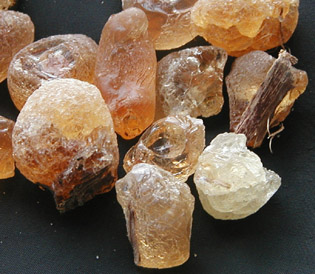
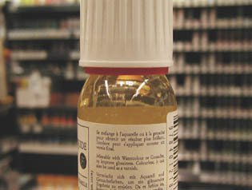
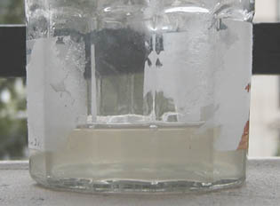
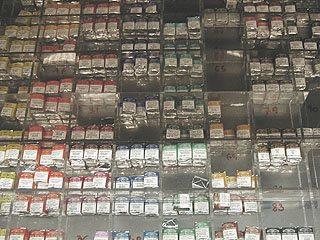
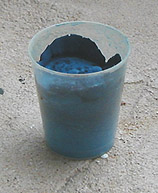

Gomme arabique,
aquarelle
La gomme arabique servit dès
l'Égypte ancienne pour la réalisation de détrempes.
Certains auteurs lui attribuent cinq mille ans de bons et loyaux services.
Pourtant, au début de cet article, il n'est pas inutile
de rappeler que ce liant n'est pas éternel. Des égyptologues ont vu des
peintures murales s'effacer après qu'elles aient été soumises au jour et à
l'air ambiant. Les conditions de conservation sont essentielles, il faut
le souligner, et si une bonne gomme arabique est fiable, il ne faut pas
s'attendre à ce qu'elle protége le pigment comme le feraient l'huile,
l'acrylique ou certaines cires.
Elle est utilisée actuellement pour plusieurs
procédés de peinture et de dessin :
*
l'aquarelle, à bien distinguer des autres détrempes tant elle correspond
à une technique artistique tout à fait à part. Elle est née à la fin du XVIIème
sous l'impulsion du peintre anglais Paul Sandby et surtout de John Constable,
qui laissa vingt mille aquarelles. Elle a progressivement
détrôné lavis et autres détrempes.
* la mine sanguine classique (non la
craie, le carré ou le crayon), qui est "aquarellable". Aucun
rapport avec le "crayon aquarellable" moderne : une dilution plus lente
est nécessaire. Elle doit avoir lieu hors du dessin/tableau car le
temps d'imbibition est plus important (quelques minutes).
Lire passage in La sanguine.
|
Sommaire
La gomme arabique : provenance
et particularités
Particularités de la
peinture aquarelle
Adjuvants
L'eau
Fabrication de la peinture
Les pigments
de l'aquarelle
Caractéristiques
spécifiques de l'application des couleurs
Autres
spécificités
-
Opacification
-
Séchage
-
Réserves
-
Corrections
-
Utilisation
"normale" des blancs avec l'aquarelle
-
Outils
utiles
-
Une
peinture se prêtant aux effets
-
Conditionements
: tubes, godets et demi-godets
Vernis
pour l'aquarelle
Une technique hybride, la gomme bichromatée
Autres
informations
_____ |
* elle entrerait encore dans la
composition de certaines encres.

* Elle a pratiquement disparu des gouaches.
La gomme arabique
est également utilisée en cuisine et en confiserie (voir
ci-dessous).
La gomme :
provenance et particularités
Sauf culture acclimatée en serre, elle est actuellement récoltée au
Sénégal et au Soudan - les sources anglo-saxonnes mentionnent aussi le Nigeria
et l'Australie - sur des arbres de la famille des acacias (voir le morceau
d'écorce resté collé sur un morceau, à droite sur la photo ci-contre). Sa teinte
naturelle est un jaune plus ou moins pâle (d'autant plus pâle qu'elle serait
de bonne qualité, disent certains, conseillant d'écarter tout morceau trop
foncé).
Les gommes "Sénégal" seraient moins
onéreuses, théoriquement réservées à la gouache, selon certaines sources
(en fait, comme nous le disions, les gouaches actuelles ne contiennent
plus de trace de gomme arabique, ce qui signifie que cette information n'est
probablement plus valable). On mentionne aussi des lieux de fabrication dans le
monde anglo-saxon, notamment en Australie. Selon d'autres sources, la gomme du Sénégal
serait la meilleure. Nous avouons manquer d'informations sûres à ce sujet. La "Kordofan" serait la plus réputée.
Depuis l'aube des temps, c'est la géopolitique qui décide de l'approvisionnement.
Le Soudan actuel, tout comme le royaume antique de Kerma, en guerre contre l'Egypte,
n'offre pas plus aujourd'hui un contexte géopolitique favorable aux échanges commerciaux.
Une certitude se dégage cependant : la gomme arabique de la région est-africaine
a fait ses preuves depuis des millénaires, les murs des tombeaux égyptiens en
attestent.
|
Le diluant de cette gomme est l'eau, employée
massivement, d'où les termes anglais et français "watercolor" et "aquarelle".
Reprenant une vieille boutade, nous dirons que "l'aquarelle, c'est de l'eau
améliorée". Ce qui caractérise ce liant, c'est effectivement son aptitude à
remplir son rôle même lorsqu'il est fortement dilué.
La gomme arabique a parfois une très légère tendance à
l'acidité. Elle n'est alors pas bénigne en tant qu'adjuvant à d'autres
procédés (exemple : avec un mélange à la chaux ou à la
caséine, ou simplement adjointe de
glycérine, elle peut parfois provoquer des réactions chimiques). Testée au
papier tournesol en solution à l'eau
distillée (pH neutre), elle peut aussi révéler (bonne
surprise !) une parfaite neutralité.
Elle ne trouve pas d'emploi dans des procédés tels que
la peinture à l'huile ou à l'acrylique, semble-t-il. Par
contre, depuis très longtemps, elle n'est pas inconnue des décorateurs.
Particularités de la
peinture aquarelle
Les couleurs à l'aquarelle sont très pigmentées. Cette particularité fait à
la fois leur intérêt et leur fragilité (particulièrement vis-à-vis de la lumière
: elles sont fortement photosensibles).
|
La gomme
arabique et la guimauve
La véritable guimauve,
celle que les marchands des fêtes foraines suspendaient, tiède, sur des
pics métalliques rivés au plafond, n'existe plus depuis des décennies.
Pourquoi ?
Parce que son coût de
fabrication était excessif.
Mais pourquoi l'était-il
devenu ?
D'abord parce que la
guimauve est une plante qu'il faut cueillir et traiter, ce qui a un
prix, ensuite parce que la pâte de guimauve contient... de la gomme
arabique.
Celle-ci était soudanaise.
Or, pendant les années 70, la grande instabilité politique de la région,
rendant ardu le maintien des échanges commerciaux, additionnée de
sécheresses qui furent dévastatrices aussi pour les acacias, rendirent
la gomme soudanaise indisponible, déclenchant l'abandon de la délicieuse
guimauve. |
Le broyage des pigments devrait être bien fin, peut-être un peu plus,
dit-on, que pour
d'autres peintures. Les pigments industriels sont très bien
broyés de nos jours, mais selon certains peintres, dans quelques cas rares, une finition à la molette
pourrait s'avérer nécessaire. Cette information n'est absolument pas
confirmée. Elle est même suspecte : il pourrait s'agir d'une rumeur tenace
provenant
d'une époque reculée. Pour le moment, nous n'avons pas constaté une
quelconque nécessité de procéder à un broyage supplémentaire et il y a lieu
de signaler que la molette risque fort de donner des résultats décevants,
comparée à la puissante machinerie des industriels.
Cependant, toute expérience
avec un pigment trop grossièrement broyé pour un usage à l'aquarelle nous
intéresse.
La gomme arabique est généralement peu réversible : elle ne
se remet pas aisément en solution à partir du moment où elle a séché une fois sur
le papier. Le
repentir est difficile.
Quelques fabricants d'aquarelles de
haut de gamme annoncent clairement, voire fièrement, la réversibilité de leurs produits. C'est
pour beaucoup d'aquarellistes un non-sens et cela signale une gomme anormale.
Le travail en couches multiples, en
lavis superposés, est en effet typique du procédé à la gomme arabique. Si les couches inférieures devaient
se raviver comme des gouaches et se mêler aux couches fraîches, cela
nécessiterait un changement radical d'approche artistique. Il en va de même
pour la peinture décorative où certains incidents sont signalés dans le
domaine de l'application en couches multiples. Question de qualité.
En fait, un degré vraiment très modéré,
très restreint, de réversibilité est "communément admis", à
condition de ne pas mettre en danger la structure et la composition
antérieurement mises en place. La manière d'appliquer la couleur
(effleurement, frotté, lavis,
projeté, etc.) joue un rôle : elle
doit être adaptée aux caractéristique de la gomme.
Du point de vue de la conservation,
des précautions s'imposent. Il faut conserver impérativement
les oeuvres en milieu sec de toute manière et à l'abri de la lumière aussi
longtemps que possible (cartons à dessin).
L'empâtement est absolument impossible et un véritable épaississement est
difficile à obtenir.
La fragilité réputée des tableaux à l'aquarelle n'est pas seulement
due au taux de dilution extraordinaire que le peintre impose à cette peinture :
elle dépend de la stabilité chimique de ses composants et du support. Il est
imprudent de saturer une aquarelle en adjuvants de toutes sortes. Les fabricants
veillent déjà à offrir les produits les plus stables possibles. Pour les
personnes souhaitant fabriquer leur aquarelle, la modération dans les dosages
et le maintien d'un pH raisonnable sont recommandés.

Adjuvants
Les adjuvants typiques de l'aquarelle, uniquement employés lors de la
préparation de la pâte, sont le miel, le
sucre, le fiel de boeuf (agent facilitant le
mouillage du pigment et l'adhérence à certains supports lisses), la glycérine
(pour la souplesse)
et/ou la dextrine
(cette dernière pouvant accroître dangereusement la réversibilité de la peinture),
miel et dextrine ayant le point commun d'apporter du
glucose.
C'est à ces produits (à adjoindre en doses
homéopathiques) que se
limite à peu près la "cuisine de l'aquarelle", cuisine pratiquement restreinte au seul
moment de la fabrication de la peinture car il n'y a pas de médiums dans ce
procédé. Les adjonctions de produits divers dans le frais n'ont pas la même
vocation : il s'agit de produire des "effets".
Nous conseillons aux peintres souhaitant fabriquer leur aquarelle de ne pas
utiliser d'adjuvant dans un premier temps. Seules de très petites doses de
glycérine peuvent s'avérer nécessaires pour qui travaille sur support souple.
A part ce produit, nous émettons quelques réserves de
toute façon quant à l'utilisation d'autres adjuvants car l'aquarelle est une
peinture très fragile qui gagne à conserver la plus forte concentration possible
de gomme arabique.
L'eau
Elle peut modifier radicalement l'aspect des travaux en fonction de ce
qu'elle contient réellement.
Tout bien considéré,
c'est elle l'ingrédient principal de votre peinture !
L'eau du robinet, généralement alcaline (nous relevons notamment un pH
très marqué en Île de France),
contient des métaux alcalinoterreux formant
des oxydes de couleur blanche, ainsi que des sels de chlore
attaquant le pigment. Elle
accentue l'impression de matité, de blancheur au séchage.
L'eau distillée ou du moins l'eau déminéralisée sont conseillées
(vérifier quand même leur neutralité chimique avec du papier
tournesol). Lire
l'article consacré à l'eau.
Fabrication
Recette (les proportions indiquées sont à mesurer en poids) :
* préparer une
eau gommée :
* 1/3 de gomme arabique solide réduite en poudre (le marteau s'avère
indispensable : c'est une substance très dure), à placer dans des sacs puis dans un bocal comme pour la
fabrication du médium dammar
* 2/3 d'eau distillée
ou déminéralisée.
* Laisser reposer une nuit (si possible, agitez de temps en temps, décollez
le ou les sacs du fond). La gomme doit avoir littéralement fondu. Il ne
doit rester aucun morceau dur ni même mou dans les sacs.
* une eau gommée doit être considérée comme 30%
± 10% du
produit final, poids du pigment inclus. Cela peut surprendre, mais ce
dernier occupe en effet à peu près 70% de la masse totale, chiffre tout de
même très variable en fonction des produits en présence.
* FACULTATIF (voire à éviter lors des premiers essais)
: avant d'incorporer le pigment, ajouter "un peu" de glycérine
(quantité maximale de ce produit : 1/20ème du poids de l'eau gommée -
certains auteurs avancent une proportion excessive de 15%, tout à fait
inutile) pour donner de
la souplesse et provoquer certaines réactions chimiques relativement
stabilisantes dans certaines conditions - voir Adjuvants. Certains peintres rajoutent un peu de fiel de boeuf
qui donne une certaine tenue sur différents supports, comme mentionné
ci-dessus. Il est très important de mesurer le pH des
produits ajoutés (papier tournesol).
Certains miels, par exemple, s'avèrent acides. Dans ce cas, il vaut mieux
mélanger séparément miel et glycérine (ou autre alcool) et observer le
résultat avant d'adjoindre ces substances à l'eau gommée.
Les adjuvants peuvent s'avérer
hygroscopiques à partir de certaines proportions et des tests
préalables en présence de l'eau utilisée comme diluant, sur un échantillon
du futur support à peindre, sont alors indispensables.
* incorporer le pigment et malaxer à la spatule
* placer la pâte dans un godet ouvert, laisser sécher
* si la pâte sèche trop vite, ajouter de l'eau distillée.
Certaines couleurs pourraient nécessiter un traitement spécifique, du moins
selon certaines sources :
* le bleu outremer -> certaines sources recommandent d'ajouter du
borax
ou de la glycérine,
qui neutraliseraient soi-disant les réactions induites par l'acidité de la gomme
arabique. Ce traitement ne s'impose qu'à cette condition. Or, il est peu
conseillé de toute manière d'employer une gomme arabique acide.
* l'alizarine (voir garance) gagnerait à se voir adjoindre une charge de dextrine.
Information à vérifier. De toute façon, l'alizarine véritable, issue
de la racine de garance, n'est qu'assez peu employée en peinture
contemporaine.

L'utilisation de gomme arabique vendue sous forme
liquide, sorte d'eau gommée
dont l'utilisateur ne connaît pas la proportion de gomme par rapport à l'eau
et ignore s'il y a présence de miel, de glycérine ou d'autres composants,
peut être envisagée si le produit est fabriqué par une entreprise de
confiance - qui n'hésiterait pas à fournir des informations détaillées. Voir
image ci-contre à droite : exemple d'eau gommée nettement jaune, beaucoup trop
teintée. Un tel produit est inquiétant.
Une eau gommée peut
être trouble mais elle ne
devrait pas être colorée (elle est normalement presque incolore, voir
ci-dessous).

Les pigments de l'aquarelle
La plupart sont ceux que l'on retrouve dans les autres peintures, mais on
trouve quelques spécificités typiques dans la palette de base, reprises
d'ailleurs par certains
fabricants de couleurs à l'acrylique :
* le gris de Payne (fortement bleuté), très prisé, superbe.
Il autorise la création de sfumatos, d'ombres et de noirs.
* la laque d'alizarine cramoisie
("alizarine crimson"). Voire Garance
C'est depuis longtemps une imitation.
* le vert de Hooker, le vert de vessie, certains autres verts et bleus
"phtalo".
Les noirs sont peu employés, les mélanges de bleu (ou de gris de Payne) et
de brun foncé (terre d'ombre brûlée) les remplaçant avantageusement.
Concernant le blanc, voir paragraphe suivant. Pour débuter, une dizaine de couleurs
suffisent. Souvent, l'aquarelliste confirmé n'emploiera guère plus de vingt
pigments au total - d'où l'intérêt des boîtes vides ou à demi vides
disponibles dans le commerce.
Caractéristiques
spécifiques de l'application des couleurs
Les blancs ne sont en théorie jamais employés.
La transparence de
l'aquarelle autorise et indique même particulièrement l'utilisation de la seule blancheur du papier
comme source de lumière (voir aussi
ci-dessous, réserves) comme dans le travail,
ci-contre, de Sylvie Guillot, à la
frontière entre dessin et peinture. Cette spécificité rend la
technique de peinture à l'aquarelle extrêmement proche - dans l'esprit - des
glacis à l'huile, mais incite davantage à une sorte de
gestuelle et d'approche spécifique, souvent faite d'un curieux mélange de
spontanéité et de précision.
L'obtention d'une couleur ne doit théoriquement pas se faire sur la palette mais sur le tableau, par superposition,
ce qui est facilité par les temps de séchage infiniment plus courts qu'en
peinture à l'huile. En échange, le droit à l'erreur est nettement diminué.
Beaucoup d'aquarellistes sont de grands consommateurs de papier...
Mais cette contrainte peut constituer une incitation à ne pas chercher à
peaufiner (ce qui oblige à mettre en oeuvre plus de dextérité) ni à réduire les
accidents, tout en aiguisant le regard, la concentration et le geste.
Mais les approches sont en réalité nombreuses et ces quelques indications
généralistes ne doivent absolument pas être pris au pied de la lettre car
presque tout est possible en aquarelle sauf l'empâtement.
Autres
spécificités
Opacification
Dans certains cas, l'aquarelliste peut avoir besoin de rendre sa peinture
plus opaque et peut alors rendre ses couleurs plus couvrantes en leur
adjoignant du blanc (c'était, paraît-il, le principe des premières gouaches :
l'adjonction de blanc de lithopone, à la mode à l'époque). Cela les transforme, les corrompt d'une certaine
manière, mais l'opération peut être indispensable dans certains contextes.
Voir plus loin, «Utilisation
"normale" des blancs avec l'aquarelle».
Séchage
Le temps de séchage dépend fondamentalement de l'humidité atmosphérique.
Une aquarelle sèche intégralement par temps chaud et sec en une heure au plus,
sauf si le papier est totalement imbibé d'eau.
Par temps humide, plusieurs heures peuvent être nécessaires.
Réserves
Lire
l'article
consacré à ces procédés.
L'utilisation de gomme à masquer ("drawing gum") permet de créer
des "réserves".
Autre moyen technique : la cire de bougie. Elle a
deux gros défauts : elle n'est pas très facile à appliquer et encore moins à
enlever.
Certains aquarellistes utilisent des crayons spéciaux, faits d'une sorte de paraffine,
traitée à cet effet (difficile à trouver dans le commerce, semble-t-il).
Cette cire-là ne s'enlève pas. Elle peut être nettoyée des traces infligées
par accident, c'est tout.
Corrections
Théoriquement impossibles, un tantinet contraires à l'esprit de
l'aquarelle, on peut tout de même les réaliser de différentes manières :
* application locale d'eau de Javel. Attention : le dépôt risque de
demeurer hygroscopique. Les sels déposés se ravivent en présence d'eau ou
d'humidité
* application d'un mélange d'alcool
à brûler et d'eau distillée.
Cette mixture est censée remettre la peinture en solution. Procédé non
testé, sans garantie.
* surcouche de blanc.
Cette dernière méthode nécessite l'emploi d'un pigment très couvrant, le
blanc de titane de préférence, sous forme de gouache éventuellement (car
toujours plus couvrante
que l'aquarelle).
Utilisation "normale" des blancs
avec l'aquarelle
Elle est limitée
* aux brumes et aux flous. Elle peut être réalisée avec un blanc de
Chine, moins couvrant que le titane. Elle est appliquée en lavis par-dessus de
larges régions, comme un glacis en peinture à l'huile
* aux zones nécessitant au contraire de la précision. Il faut alors
préférer le blanc de titane, à mêler aux couleurs sur la palette même.
Le blanc demeure d'un usage véritablement mineur chez les aquarellistes professionnels.
Voir aussi ci-dessus, "Opacification".
Outils utiles
Un assez gros pinceau de type petit-gris
est pratiquement indispensable car cet outil autorise des applications très
variées (notamment fines, lorsque l'on n'utilise que la pointe), tout à fait
adaptées à l'aquarelle, mais d'autres poils sont couramment employés. On peut se
contenter d'un pinceau à poil très souple (petit-gris) et éventuellement d'un
autre à poil plus dur, mais tout est permis.
Les chiffons et autres Sopalin
® sont extrêmement utiles
à l'aquarelliste pour résorber les excédents d'eaux et nettoyer rapidement
les palettes.
La brosse à dents et d'autres types de brosses permettant la projection
sont aussi très utiles.

Une peinture se prêtant aux effets
L'aquarelle, comme les encres, se prête d'un point de vue pictural aux techniques mixtes et aux effets.
Au point de vue chimique, cette peinture étant fragile, seuls certains produits
peuvent être employés.
Le sel (surtout le gros sel) est assez utilisé, non sans bonnes raisons. On
le jette dans le frais. Il
faut bien réfléchir d'avance au procédé d'application et surtout de retrait car une
fois sec, il arrache la surface du papier lorsque l'on veut le décoller. Il
vaut mieux le retirer dans le demi-frais avancé.
L'eau salée est extrêmement alcaline (nous avons mesuré un pH
très élevé dans une
eau distillée mêlée de sel de cuisine). Le sodium
du sel (NaCl) fait partie des métaux alcalins. Il n'est pas exclu que des
réactions se produisent au contact de certains pigments et supports.
Le sable très fin et les copeaux de bois très fins également, pour ne pas
dire pulvérulents, permettent
également de réaliser certains effets.
Le fusain, préalablement fixé ou non, mêlé ou non à l'eau ou à la
peinture (application en sous-couche ou même dans le frais), autorise des rendus
intéressants d'autant plus qu'il donne de superbes résultats sur les papiers
pour l'aquarelle.
Par-dessus une surface peinte à l'aquarelle bien sèche, tout est possible,
mais il faut souligner le fait que l'application de certains corps gras (huiles
particulièrement) "tâchera" l'image.
Conditionnements
: tubes, godets et demi-godets, etc.
Godets, et surtout "demi-godets" sont les plus répandus et les
plus adaptés aux petites surfaces et en emploi à l'extérieur. Ils jouent
aussi un bon rôle pédagogique en incitant l'aquarelliste débutant à ne pas
faire d'empâtements.
Les tubes et les flacons se prêtent aux gros pinceaux et aux grandes
surfaces. La pâte se dilue évidemment plus facilement. Théoriquement, elle
serait plus brillante mais nous n'avons pas constaté cela dans les faits.
Mais le grand intérêt du conditionnement liquide est qu'il est très possible - sauf exception liée à une particularité de
fabrication - de laisser sécher le contenu d'un ou de plusieurs tubes (mélange
maison) dans un godet ou sur une palette et de travailler ensuite avec cette peinture durcie.

Si vous fabriquez vous-même votre aquarelle, le petit pot de plastique est
très conseillé (photo). Il permet l'utilisation d'assez gros pinceaux et peut
être fixé au fond d'une boîte avec un peu de colle.
Les godets et pâtes sèches devenues craquelés doivent simplement être imbibés d'eau. L'apparition
d'un peu de moisissure, lorsqu'un boîte est refermée alors que les godets sont
encore imbibés d'eau, est sans conséquence. Il est tout à fait inutile de
recourir à de l'essence de girofle (une coutume ancienne) car il suffit de nettoyer à l'eau.
Certains auteurs préconisent l'emploi de fluorure de sodium ou de désinfectants ménagers.
C'est totalement inutile. L'expérience démontre que les agents conservateurs
peuvent être gardés pour d'autres usages plus utiles, sauf peut-être lorsque le
peintre travaille dans un lieu infecté ou lorsque la gomme arabique employée est
particulièrement acide.
En dehors du contexte spécifique de
l'emploi de tubes d'aquarelle - qui de toute façon ont tendance à sécher -, il
est rarement utile de conserver durablement l'aquarelle sous forme non solide
(pâte, liquide). Il n'y a dans ce cas aucune nécessité d'adjoindre un agent
conservateur dans l'eau lors de la fabrication si celle-ci est pure et les
outils raisonnablement propres.
La distribution au détail de godets entiers n'est pas très usuelle alors que les
demi-godets à l'unité sont courants.
Vernis pour l'aquarelle
Il n'y a pas, en théorie, de vernis pour l'aquarelle. Par contre, l'emploi d'un fixatif pour fusains et pastels
à fins de conservation d'une aquarelle n'est pas déconseillé bien qu'il ne soit
pas anodin. Il n'isolera jamais la peinture à la manière d'un
vernis mais retardera l'altération du pigment. Il risque cependant de modifier l'aspect général des couleurs.
Une autre solution quelquefois employée consiste à couvrir le tableau d'une fine
couche d'eau gommée légèrement diluée. Eau et eau gommée doivent alors être
neutres chimiquement faute de quoi le remède serait pire que le mal.
L'emploi d'un vernis, d'un médium ou d'un médium-gel acrylique protège mais transforme
radicalement l'aspect d'un tableau réalisé à l'aquarelle. Pour certains travaux, cette
transformation - qui n'a rien de classique - est en fait très intéressante
mais nécessite un "calcul" préalable : ces produits, mêmes mats,
vivifient les couleurs non sans outrance et l'épaississement qu'ils occasionnent peut être mis
à profit pour la formation d'ombres et d'effets visuels (filtrage, masquage) à
l'aide de surcouches réalisées avec d'autres peintures (acrylique, vinyle,
huile dans certains cas, etc.).
Certains fabricants se sont lancés dans la création de prétendus vernis
pour l'aquarelle en omettant de préciser la composition de ces produits. Bons
ou mauvais, ces produits ne devraient jamais être utilisés en
l'absence d'informations sur leur composition et sur leur destination précise
(lire courrier d'un lecteur). La confiance d'un artiste,
même envers un fabricant de renom, connaît tout de même des limites : peut-on
par exemple - question essentielle -, comme en peinture à l'huile, retirer
aisément de tels vernis ? Sous quelles conditions peuvent-ils entrer en interaction avec la couche
peinte ? De quelle manière "accrochent-ils" celle-ci ? Puis-je
travailler en plusieurs couches, avec différents produits ? Quels produits ?
Quels sont les incompatibles ?
Notre opinion est, compte tenu du fait qu'il s'agit de produits
entièrement nouveaux censés révolutionner les usages, en l'absence d'informations de cet ordre,
ils ne peuvent
en aucun cas convenir à un travail de qualité. Nous recommandons fortement
à nos visiteurs de les éviter.
Une technique hybride, la gomme bichromatée
Il s'agit d'un procédé à mi-chemin entre photographie et peinture.
Erick Mengal le décrit parfaitement dans un article de
son site. Cliquer
ici (ou
ici pour la version
PDF Acrobat).
Autres informations
La gomme arabique entrerait dans la composition de certains vernis craqueleurs.
Cette information pourrait être valable car l'une des techniques les plus
utilisées en arts décoratifs pour provoquer des craquelures fait intervenir ce
produit (lire article).
Voir Papiers pour l'aquarelle, La
gouache, L'eau.
Retour
début de page